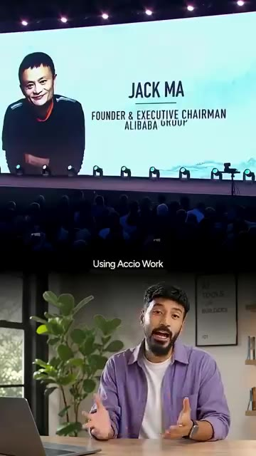
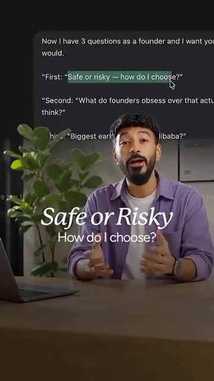
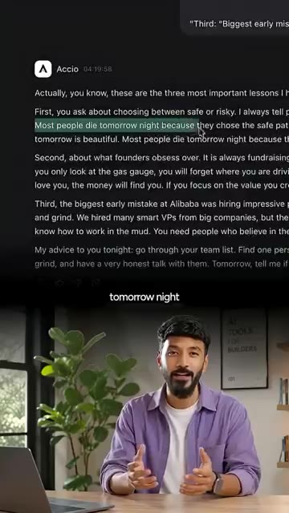
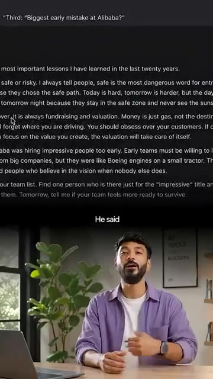
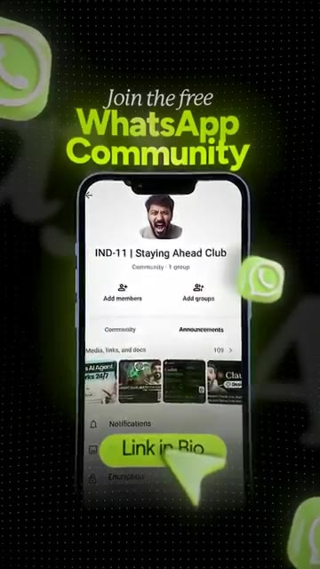

Je déteste le mot IA appelé Intelligence Artificielle. J'appelle ça l'Intelligence Alibaba. Ouais. Et maintenant Jack Ma est en train de le prouver. J'ai cloné Jack Ma en une IA et je lui ai posé trois des questions les plus difficiles en tant que fondateur et ce qui est sorti comme réponses va vous choquer. Construire en tant que fondateur solo est difficile. Chaque décision vous revient.
Interface & Outils : AUCUNE
Contenu textuel & Code : Texte incrusté à l'écran : "Jack Ma Returns - Inside the Alibaba Founder's Bold AI Comeback in 2026" et sous-titres du discours.
Action / Démonstration : Le présentateur s'adresse directement à la caméra en faisant des gestes pour introduire le sujet sur Jack Ma.
La pression, l'incertitude et cette solitude à 2 heures du matin, sans cofondateur, sans mentor à qui parler. Cela m'a fait penser à Jack Ma, quelqu'un qui a échoué de nombreuses fois en créant Alibaba et qui a failli abandonner plus d'une fois. Je me suis donc demandé : et si j'avais un mentor dans le style de Jack Ma à qui je pourrais parler à tout moment ? En utilisant Axio Work, un outil d'IA de l'entreprise de Jack Ma, j'ai créé une compétence qui réfléchit et répond comme lui.
Interface & Outils : Présentation vidéo sur scène et studio personnel.
Contenu textuel & Code : Texte 'Jack Ma - Founder & Executive Chairman Alibaba Group' et 'Using Accio Work'.
Action / Démonstration : Présentation d'archives vidéo de Jack Ma en lien avec le sujet des mentors et d'Alibaba.

🔍 AgrandirEnsuite, je lui ai posé trois questions que je n'avais jamais dites à voix haute à personne. Premièrement, sûr ou risqué ? Comment choisir ? Il a dit, « sûr » est le mot le plus dangereux pour les entrepreneurs. La plupart des gens meurent demain soir parce qu'ils ont choisi la voie de la sécurité. Cette phrase m'a vraiment marqué. J'avais l'habitude de trop réfléchir entre la sécurité et le risque. Maintenant, je réalise que la sécurité signifie souvent faire ce que tout le monde fait et cela peut vous piéger pendant des années.
Interface & Outils : Interface de type application de notes ou outil textuel avec un curseur (Accio).
Contenu textuel & Code : Texte affichant des questions de fondateur et la réponse sur les choix « safe or risky ».
Action / Démonstration : Le présentateur commente le contenu textuel affiché à l'écran concernant les conseils pour entrepreneurs.

🔍 Agrandir
🔍 AgrandirDeuxièmement, sur quoi est-ce que les fondateurs font une fixation alors que ça compte beaucoup moins qu'ils ne le pensent ? Il a dit, la levée de fonds et la valorisation. L'argent n'est que de l'essence, pas la destination. Ça a vraiment fait écho en moi. Nous nous concentrons trop sur le nombre d'investisseurs et nous oublions la vraie douleur des utilisateurs. Troisièmement, la plus grande erreur de début chez Alibaba. Il a dit, embaucher des personnes impressionnantes trop tôt. Les équipes de départ doivent être prêtes à apprendre, à échouer et à trimer dur.
Interface & Outils : AUCUNE
Contenu textuel & Code : Texte extrait d'une réflexion sur Alibaba et la levée de fonds ("Third: 'Biggest early mistake at Alibaba?'", "Money is just gas, not the destination").
Action / Démonstration : Le présentateur s'exprime face caméra en studio, illustré par un texte textuel en surimpression.

🔍 AgrandirÇa fait mouche. Au début, il vous faut des personnes prêtes à souffrir et à croire en la mission. Pas seulement des CV brillants. Ce n'est pas du baratin motivationnel. Ça bouscule, ça vous met au défi mais ça semble réel. Comme un mentor de la vieille école qui est passé par le feu et qui est assis en face de vous à 2h du matin. Si vous galérez aussi en solo et que vous voulez quelque chose comme ça dans votre poche, commentez Jack Ma et je vous enverrai le pack de compétences. Je partage d'autres compétences comme celle-ci chaque jour dans ma communauté WhatsApp.
Interface & Outils : Aucun outil, logiciel ou site web affiché.
Contenu textuel & Code : Texte sous-titré en anglais : "Like an old school mentor who's been through the fire" et "and want something like this in your pocket grinding solo".
Action / Démonstration : Le présentateur parle directement à la caméra en gesticulant pour appuyer son propos.
Lien dans la bio.
Interface & Outils : Application mobile WhatsApp
Contenu textuel & Code : Texte 'Join the free WhatsApp Community', nom de la communauté 'IND-11 | Staying Ahead Club', options 'Add members' et 'Add groups', et un bouton jaune 'Link in Bio'.
Action / Démonstration : Incitation à rejoindre la communauté WhatsApp via un lien en bio.

🔍 Agrandir